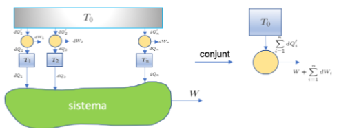

Com generalitzar Carnot a un procés cíclic amb tants focus tèrmics com calgui — tot es redueix, un altre cop, a l'enunciat de Kelvin.
ABANS DE COMENÇARDel cas de dos focus, al cas general
Ja saps resoldre el cas més senzill possible: una
màquina de Carnot que només toca dos focus, T₁ i T₂. Absorbeix Q₁ a T₁, cedeix Q₂ a T₂, i com que és reversible, Q₁/T₁=Q₂/T₂. Si sumes cada calor bescanviada dividida per la seva temperatura:
\[ \dfrac{Q_{1}}{T_{1}} - \dfrac{Q_{2}}{T_{2}} = 0 \]
(el signe negatiu perquè Q₂ surt del sistema). El factor 1/T pesa cada calor pel seu "valor en potencial de treball" a aquella temperatura — calor absorbida a T alta és barata, calor cedida a T baixa és cara. Que la suma doni exactament zero és el senyal que el procés és reversible; si la mateixa màquina tingués fricció, la suma sortiria estrictament negativa.
Ara generalitzem. En comptes d'un sistema que toca només dos focus, imagina'n un que, al llarg d'un sol cicle, en toca tants com calgui — T1, T2, T3,…,Tn — bescanviant una calor đQi diferent amb cadascun (és el sistema verd del dibuix de sota). La pregunta natural: la mateixa suma ponderada, ara amb n termes, es manté ≤0? Això és exactament el teorema de Clausius, i la manera de demostrar-ho és reduir aquest cas general, focus a focus, al cas de dos focus que ja domines.

El sistema (verd) és el cicle genèric C de l'esquema de sota: bescanvia đQi amb cada focus Ti, i com qualsevol màquina fa el seu propi treball W — no ve de cap Ti, surt directament del sistema. Cada focus Ti es reemplaça per una màquina de Carnot auxiliar (cercle groc) connectada a T₀: li lliura exactament đQi (el mateix que el sistema n'esperava) mentre bescanvia đQi' amb T₀ i fa el seu propi treball, petit, dWi. Per això Ti queda net de bescanvi — és un simple intermediari.